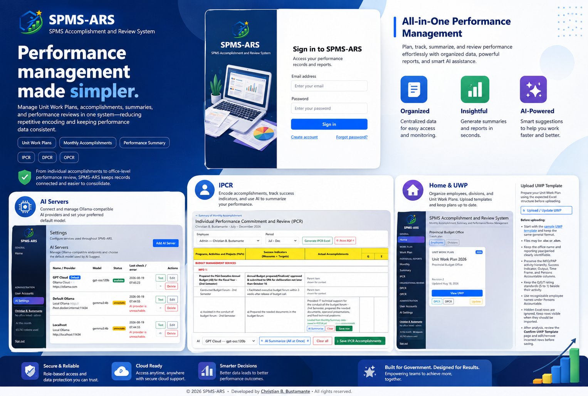
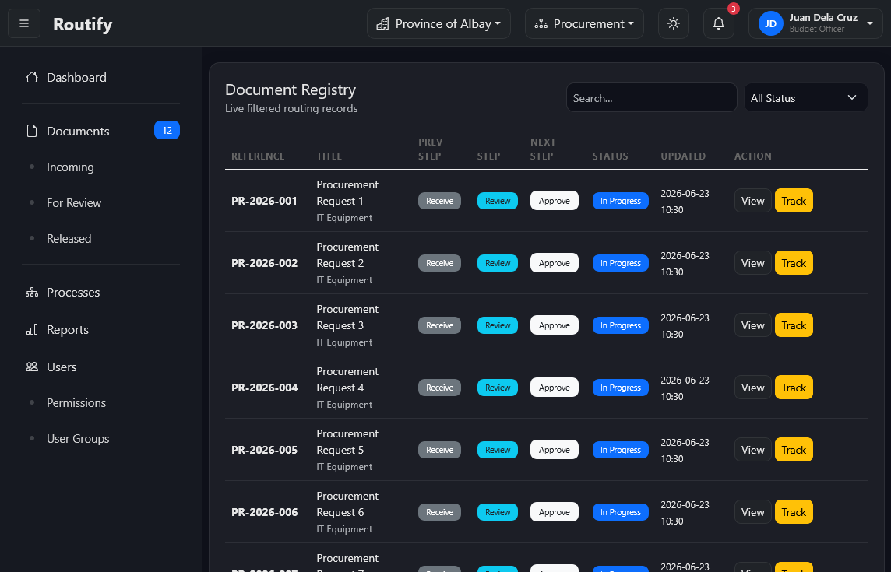
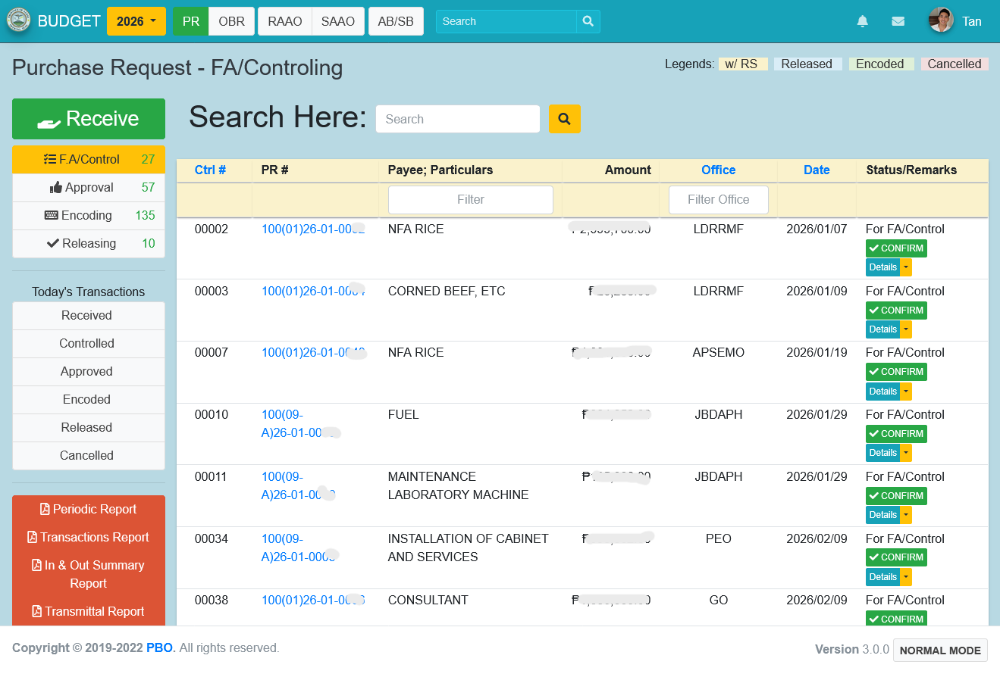
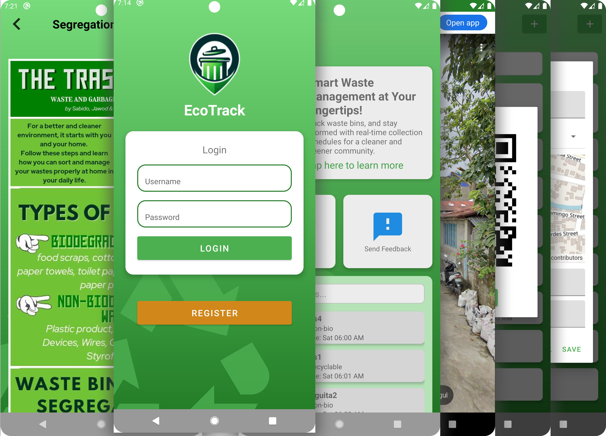
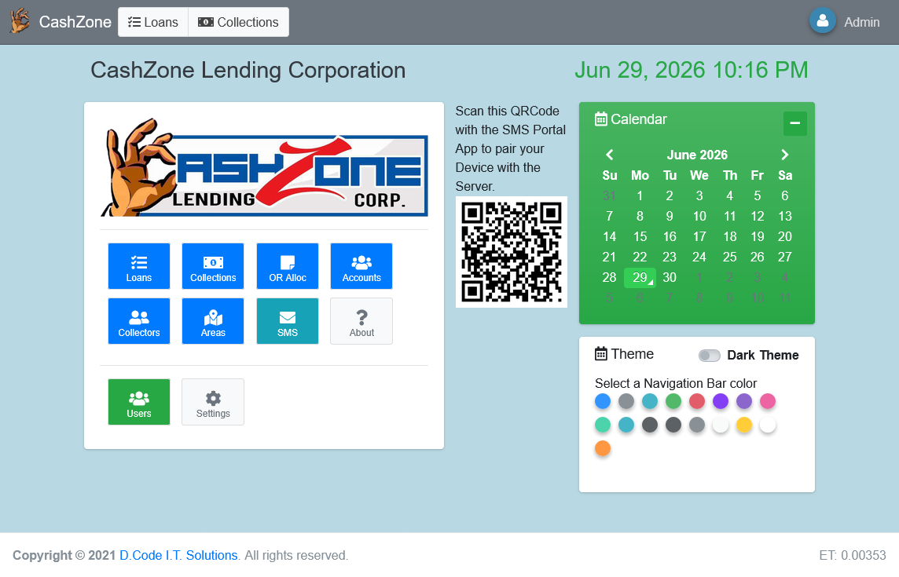
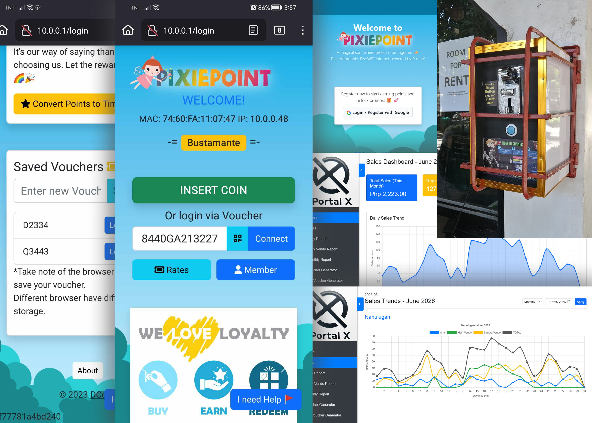
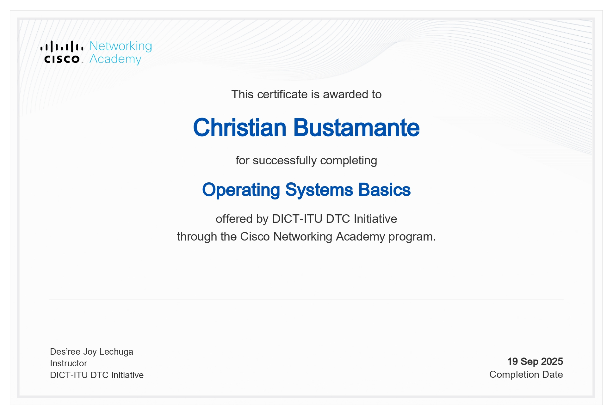
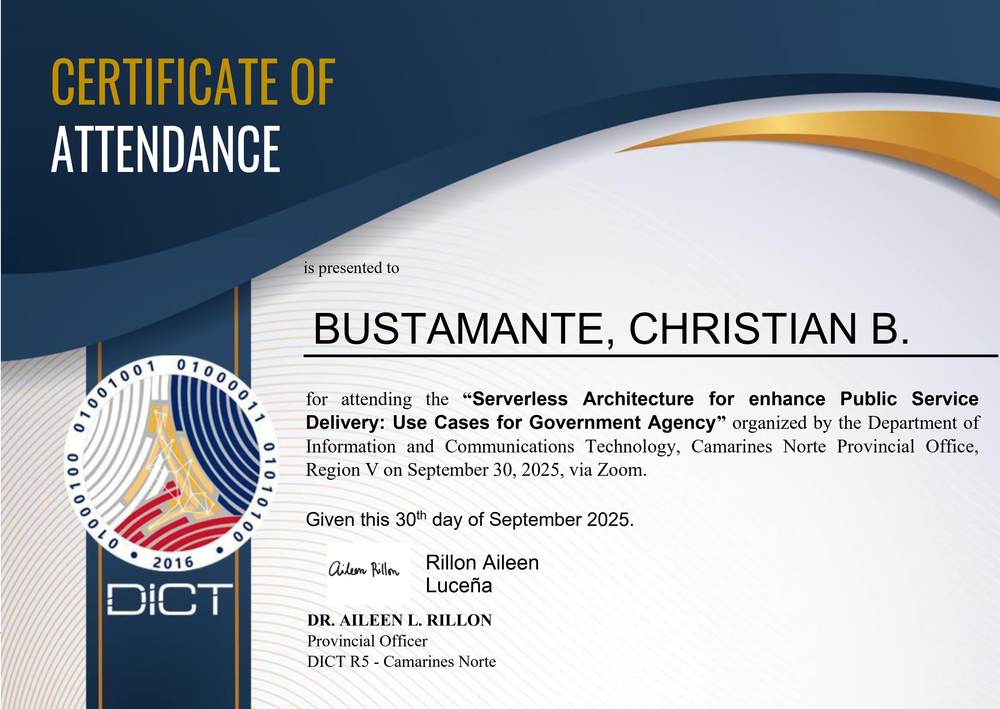
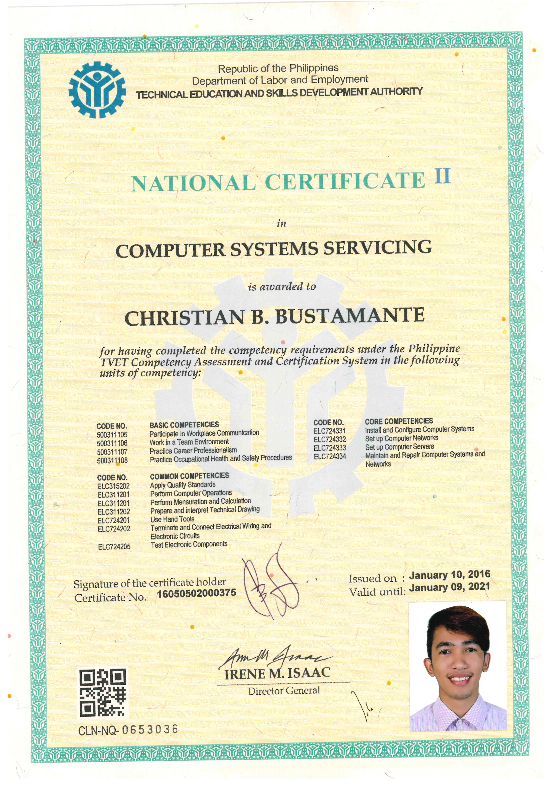

Education
Bachelor of Science in Computer Science
Foundation in software development, algorithms, databases and information systems.
Full Stack Developer • IT • Automation
Full Stack Developer and IT professional focused on solving real operational problems through software, information systems, infrastructure, automation and practical technology solutions.
I am a Full Stack Developer and Information Technology professional with experience designing, developing, deploying and supporting software and technology solutions that solve real operational and business challenges.
My background spans software engineering, web and mobile development, workflow automation, databases, infrastructure, networking, business systems, embedded technologies and integrated digital solutions.
I have delivered systems for government processes, document routing, lending, inventory, order and sales management, reporting, waste-management field operations and smart vending/monitoring.
I believe the main job of IT and software development is to understand a real problem and use the right technology to solve it reliably.
Formal education, civil service eligibility, technical qualifications and professional development supporting software and IT roles.
Foundation in software development, algorithms, databases and information systems.
Civil Service Professional / second-level eligibility.
Computer Systems Servicing, Computer Hardware Servicing and Electrical Installation & Maintenance.
Training in Python, operating systems, public-service architecture, ICT database management and digital transformation.
Functional IT responsibilities are reflected in official performance outputs, allowing my government experience to combine office-process knowledge with hands-on systems and infrastructure work.
Development of customized web, desktop and mobile applications, business systems, database-backed solutions, workflow automation and integrated software/hardware projects.
Taught IT and software-related subjects to college and senior high school students with emphasis on practical application, technical problem-solving and industry-oriented learning.
Developed and supported inventory, order and sales systems while maintaining computer and technology operations. Employment is supported by a Certificate of Employment issued in 2018.
Supported software services, deployment, troubleshooting and technology operations.
I understand both the technical layer and the office process behind a system — users, documents, approvals, reporting, accountability and day-to-day operational constraints.
Served as a speaker during the K to 12 Power Teaching Seminar-Workshop of the Polytechnic Institute of Tabaco, demonstrating professional engagement beyond day-to-day technical work.

Designed to simplify and accelerate the generation of consolidated government performance reports, particularly IPCR, DPCR and OPCR, while using AI to assist performance-data processing and reporting.

Designed to improve routing visibility, accountability and coordination for physical documents moving through organizational processes.

Originally developed for document routing and transaction tracking, then expanded with operational data entry and report generation. Because transactions are associated with the employees who process them, the accumulated records can also be organized and counted to support employee accomplishment and organizational performance reporting.

Designed to digitize and organize waste-management field operations by capturing collection activities and operational data in the field, then bringing them into a centralized system for tracking, mapping and reporting.

Organizes lending operations around customer records, loan transactions, monitoring and reports so day-to-day account activity can be managed from one system.

Designed to transform a ticket-based commercial WiFi hotspot business into a 24/7 unattended operation by automating customer access and payment handling while enabling remote monitoring and administration.
The complete technology and platform stack I use in practice, mapped to the capabilities and outcomes they help me deliver.
Web, desktop, mobile, API and business applications from backend to interface.

Database-backed systems, reporting, records, backup and recovery.
SQL design • administration • reporting • backup • recovery • data processing
Servers, containers, web services, virtualization and self-hosted environments.

Networking, remote access, routing, cloud connectivity and service exposure.


Routing • DHCP • VPN/tunneling • reverse proxy • remote access • LAN support
Development tools, source control and automated delivery workflows.
Embedded systems, devices, sensors, monitoring and smart automation.


Architecture patterns I use to structure practical, maintainable and scalable solutions.
Certificates and recognitions tied to systems I developed or supported. These are presented separately from training certificates because they document delivered work and professional accomplishments.

Evidence connected to a delivered business system and my work as a computer programmer / system technician.

Recognition tied to the development of an institutional voting/election system.

Additional evidence associated with the institutional election project and its use.
Focused on practical technical capability, public-service technology and continuing professional development.




Curiosity continues to shape what I explore next. I am interested in deeper system-level technologies, secure infrastructure, automation, AI-assisted systems and practical digital services that solve real problems.